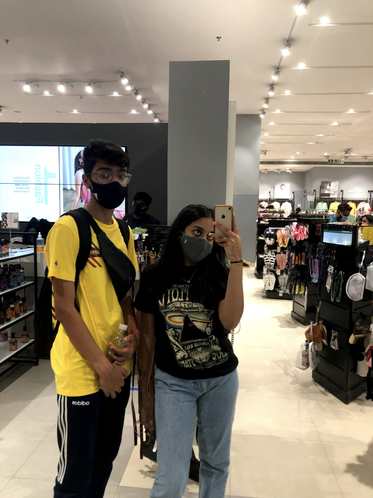
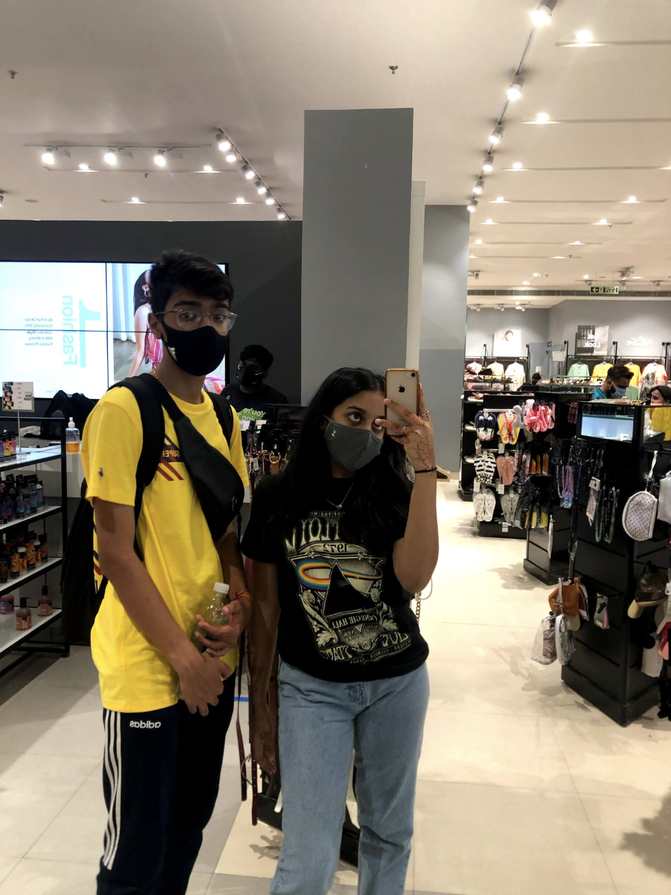

Unfortunately although we were young, we also had pretty intense lives, both of us got a little unhappy, I think within ourselves. I recall my mental health was not at its best at all, and I’m aware that nor was yours, and I think what made it worse, was not having each other through it all. I’ll take a lot of the blame here, when I was doing pretty bad, Aryan randomly popped up to me, and I ended up getting very close to him, which inevitably left you getting hurt, and I’m so sorry for that. Before I was leaving for India, you tried, you really did, you put your effort in, but unfortunately, I did not reciprocate it as well as I would’ve liked to. I’m going to cut myself some slack though, we were young and I was moving countries, I don’t think either of us were abel to understand/ deal with that. However, after moving to India, we got closer again. It was like the old days- we spent days on call, talking and fixing it up. YOU CAME TO INDIA TO SEE ME!!!! Ok not to see me, but let me be delulu and act like that was it. So yeah there we have it. I moved to India and we were far apart but somehow getting closer than ever. And at this point, we then moved into phase 2, unfortunately, that movie is not streaming here. We require you to exit back to the homepage and navigate yourself there again. Thank you!